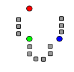
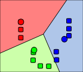
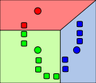
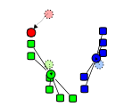
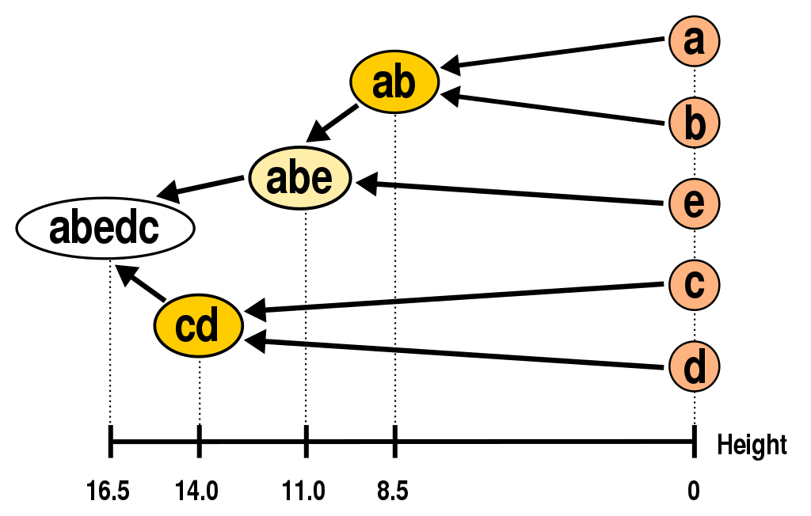
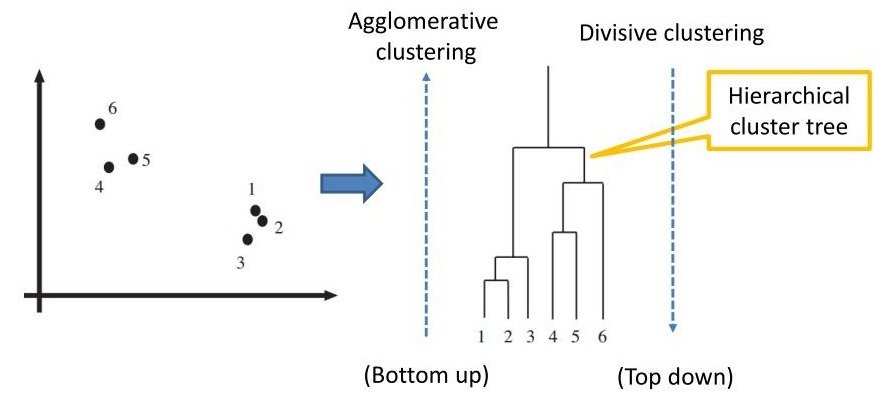
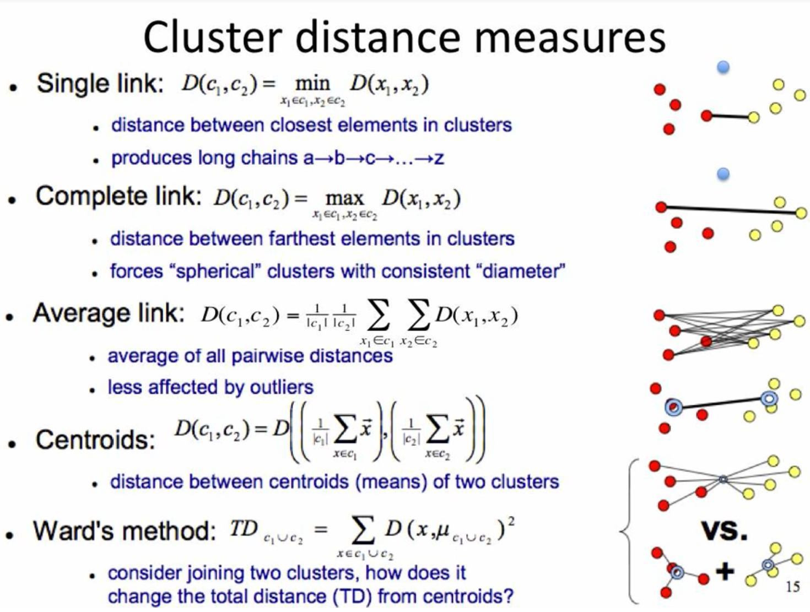
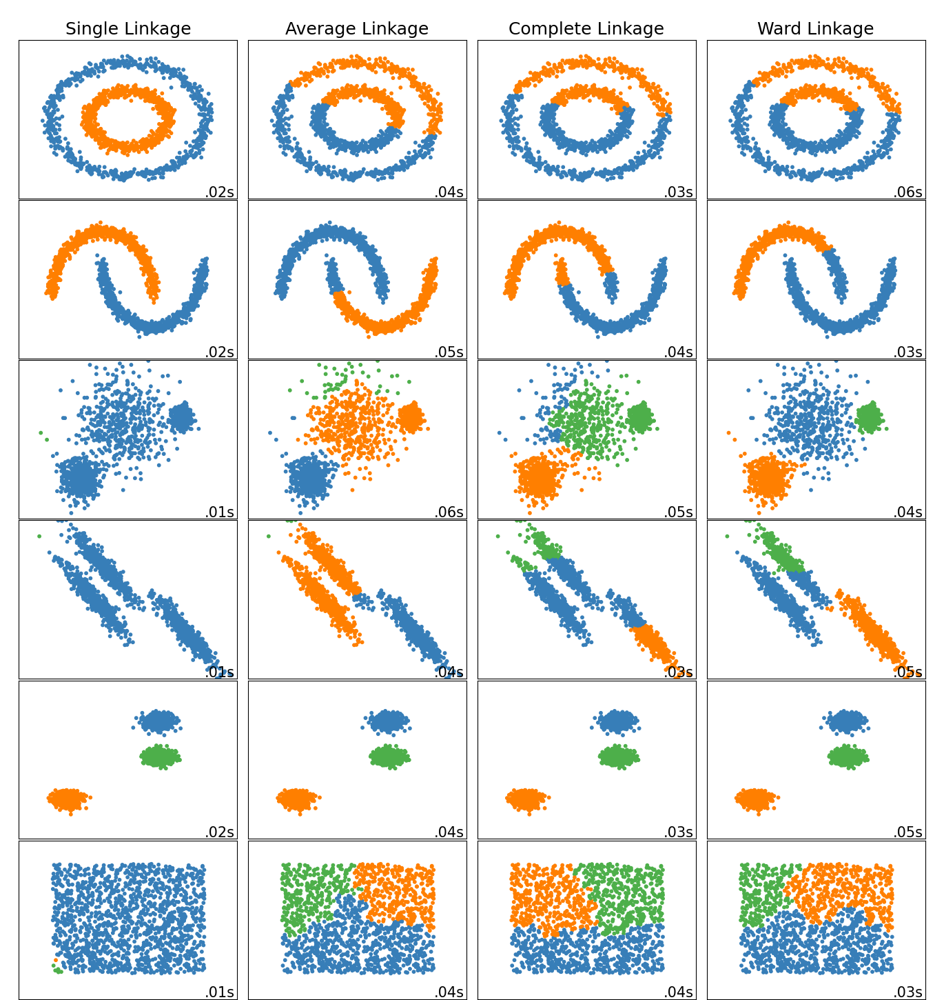

Unsupervised learning is a type of machine learning algorithm in which the model learns patterns in the data without being explicitly told what those patterns are. Unlike supervised learning, unsupervised learning does not have labelled examples to learn from, so the model must find patterns on its own. This makes unsupervised learning useful for exploring datasets and finding hidden patterns, as well as for clustering and dimensionality reduction tasks.
Purpose of Unsupervised Learning in Data Science!
The purpose of unsupervised learning in data science is to identify patterns and structures within datasets that are not explicitly labelled or classified. Unsupervised learning algorithms can help to identify hidden relationships, group similar data points and reduce the dimensionality of high-dimensional data.
Types of Unsupervised Learning Algorithms!
There are several types of unsupervised learning algorithms that are commonly used in data science. Here are some of the most popular ones:
Clustering algorithms: Clustering algorithms group similar data points together based on their features. Examples of clustering algorithms include k-means clustering and hierarchical clustering.
Anomaly detection algorithms: Anomaly detection algorithms identify data points that are significantly different from the rest of the dataset. Examples of anomaly detection algorithms include Local Outlier Factor (LOF) and Isolation Forest.
Dimensionality reduction algorithms: Dimensionality reduction algorithms reduce the number of features in a dataset while retaining the most important information. Examples of dimensionality reduction algorithms include Principal Component Analysis (PCA) and t-Distributed Stochastic Neighbour Embedding (t-SNE).
Association rule learning algorithms: Association rule learning algorithms identify patterns of co-occurrence in a dataset. Examples of association rule learning algorithms include Apriori and Eclat. (Pattern recognition)
Neural networks: Neural networks can be used in an unsupervised learning mode, for example, by training auto-encoders, which aim to reconstruct the input data through a bottleneck layer with a reduced number of neurons. (Recommendation systems)*
K-Means Clustering!
K-means clustering algorithm is used to group similar data points together. The algorithm works by iteratively partitioning the data into k (user-defined number of clusters) clusters.
The basic idea behind k-means clustering is to minimize the sum of squared distances between data points and their assigned cluster centres. In other words, the algorithm aims to find the cluster centres that minimize the variance within each cluster.
K-means clustering is mostly used for image segmentation, customer segmentation, and anomaly detection. It is a relatively simple and fast algorithm that can handle large datasets, but its performance can be sensitive to the initial placement of the cluster centres and the choice of k.
Formula!
a set of observations $$(x{1}, x{2}, ..., x_{n})$$
each observation is a d-dimensional real vector
k-means clustering aims to partition the n observations into k (≤ n) sets $$S = {S{1}, S{2},...,S_{k}}$$
to minimize the within-cluster sum of squares (WCSS) (i.e. variance)
where μi is the mean (also called centroid) of points in $$S{i} $$, i.e.
$$ {\boldsymbol {\mu {i}}}={\frac {1}{|S{i}|}}\sum {\mathbf {x} \in S_{i}}\mathbf {x} , $$
the size of $$ S{i} $$ is: $$|S{i}|$$
Formally, the objective is to find:$${\underset {\mathbf {S} }{\operatorname {arg\,min} }}\sum {i=1}^{k}\sum {\mathbf {x} \in S{i}}\left|\mathbf {x} -{\boldsymbol {\mu }}{i}\right|^{2}={\underset {\mathbf {S} }{\operatorname {arg\,min} }}\sum {i=1}^{k}|S{i}|\operatorname {Var} S_{i} $$
and
$$ |\cdot | $$
is the usual L2 norm . This is equivalent to minimising the pairwise squared deviations of points in the same cluster:
The equivalence can be deduced from identity
$$ |S{i}|\sum {\mathbf {x} \in S{i}}\left|\mathbf {x} -{\boldsymbol {\mu }}{i}\right|^{2}={\frac {1}{2}}\sum {\mathbf {x} ,\mathbf {y} \in S{i}}\left|\mathbf {x} -\mathbf {y} \right|^{2} $$
Since the total variance is constant, this is equivalent to maximising the sum of squared deviations between points in different clusters (between-cluster sum of squares, BCSS). This deterministic relationship is also related to the law of total variance in probability theory.
Purpose!
k-means clustering can be used for a variety of tasks, such as:
Customer segmentation: identifying groups of customers who share similar purchasing behaviour or preferences.
Image segmentation: dividing an image into regions that contain similar pixels or features.
Anomaly detection: identifying data points that are significantly different from the rest of the dataset.
Clustering of biological data: identifying groups of genes or proteins that have similar functions or expression patterns.
Overall, the purpose of k-means clustering is to find patterns and structure in the data that can help to gain insights into the underlying phenomena. By grouping similar data points together, k-means clustering can help to simplify the data and make it easier to understand and analyse.
The Algorithm!
Initialisation: Choose the number of clusters, k, and randomly initialise k cluster centres. Each centre represents a potential centroid of a cluster.
k initial "means" (in this case k=3) are randomly generated within the data domain (shown in colour).`
Different initialisation methods can lead to different clusterings and impact the performance of the algorithm.
Here are some common initialisation methods used in the k-means algorithm:
Random Initialisation: This is the most common initialisation method used in the k-means algorithm. In this method, k data points are randomly selected from the dataset as the initial cluster centres.
K-Means++ Initialisation: This method is an improvement over random initialisation and aims to choose initial cluster centres that are more representative of the data points. The algorithm starts by randomly selecting one data point as the first cluster centre. For each subsequent cluster centre, the algorithm selects a data point that is farthest from the existing cluster centres. This process is repeated until k cluster centres have been chosen.
Density-Based Initialization: This method is used when the data points are not uniformly distributed and are clustered in regions of high density. In this method, the algorithm first identifies the regions of high density by using a density-based clustering algorithm, such as DBSCAN. The centre of each dense region is then chosen as a cluster centre.
Hierarchical Initialisation: This method uses a hierarchical clustering algorithm to group similar data points into clusters. The cluster centres are then chosen from the resulting clusters by selecting the data point that is farthest from the other cluster centres.
The choice of initialisation method can have a significant impact on the performance of the k-means algorithm. K-means++ initialisation is often preferred over random initialisation because it can lead to faster convergence and more accurate clustering.
Assignment: Assign each data point in the dataset to the nearest cluster centre. This is done by calculating the distance between each data point and each cluster centre. The data point is then assigned to the nearest cluster centre.

k clusters are created by associating every observation with the nearest mean. The partitions here represent the Voronoi diagram generated by the means.
Recalculation: Recalculate the cluster centres by taking the mean of all the data points assigned to that cluster centre. This step creates new cluster centres that are better representatives of the data points in each cluster.

The centroid of each of the k clusters becomes the new mean.
Repeat steps 2 and 3 until convergence: Steps 2 and 3 are repeated until the cluster assignments no longer change or change by only a small amount.

Steps 2 and 3 are repeated until convergence has been reached.
Selection of optimal k: The optimal value of k is chosen based on some criterion, such as the elbow method or the silhouette score. The elbow method involves plotting the sum of squared distances for different values of k and selecting the k value at the elbow point of the plot. The silhouette score measures how well each data point fits into its assigned cluster and can be used to compare the quality of clusterings for different values of k.

Here is an interactive demonstration of optimisation process!
Limitations!
Sensitivity to initialisation: The k-means algorithm is sensitive to the initial placement of the cluster centroids. Depending on the initialisation method used, the algorithm may converge to a sub-optimal clustering solution. This means that multiple runs of the algorithm may be necessary to ensure that the best possible clustering is achieved.
Sensitive to outliers: K-means clustering assumes that all data points are equally important and treats outliers as regular data points. This can lead to sub-optimal clustering results, as the presence of outliers can distort the positions of the cluster centroids.
Requires pre-defined k-value: The k-means algorithm requires a predetermined number of clusters to be specified. This can be a challenge when the optimal number of clusters is not known beforehand, or when the data is not naturally separable into distinct clusters.
Limited to Euclidean distance metric: The k-means algorithm is based on the Euclidean distance metric, which is not always appropriate for all types of data. In cases where non-Euclidean distance metrics may be more appropriate, such as when dealing with categorical data, k-means clustering may not be the best choice.
Assumes spherical clusters: K-means clustering assumes that the clusters are spherical, meaning that each cluster has a roughly equal diameter in all dimensions. This assumption may not hold true for all datasets, which can lead to sub-optimal clustering results.
Improving the Algorithm!
Multiple initialisations: As mentioned earlier, the k-means algorithm is sensitive to the initial placement of the cluster centroids. One way to mitigate this issue is to run the algorithm multiple times with different initialisations and choose the clustering solution with the lowest cost function value.
Using alternative distance metrics: While the k-means algorithm is based on the Euclidean distance metric, other distance metrics such as Manhattan distance, Mahalanobis distance, or cosine similarity can be used depending on the nature of the data. For example, Mahalanobis distance can be useful when the data is not normally distributed or has different variances along different dimensions.
Outlier detection and removal: To make k-means more robust to outliers, one can use outlier detection techniques such as the Local Outlier Factor (LOF) or Isolation Forest to identify and remove outliers before running k-means.
Using dimensionality reduction: When the dataset has a large number of features or dimensions, it can be helpful to use dimensionality reduction techniques such as Principal Component Analysis (PCA) or t-SNE to reduce the dimensionality of the data before applying k-means. This can help to improve the clustering performance and reduce computational costs.
Using hierarchical clustering: Instead of using a fixed number of clusters as in k-means, one can use hierarchical clustering to build a tree-like structure of nested clusters. This can help to identify the optimal number of clusters for a given dataset, and can also provide a more informative visualisation of the clustering results.
Applications!
Market segmentation: K-means clustering can be used to segment customers or products into groups based on similar characteristics such as demographics, behaviour, or preferences. This can help businesses to target specific groups with tailored marketing strategies.
Image segmentation: K-means clustering can be used to segment images into regions of similar color or texture. This can be useful in applications such as object detection, facial recognition, or medical image analysis.
Anomaly detection: K-means clustering can be used to identify anomalous data points that do not fit well into any of the clusters. This can be useful for detecting fraudulent transactions, network intrusion, or equipment failure.
Recommender systems: K-means clustering can be used to group users or items based on similar preferences or behaviour. This can be used to build personalised recommendation systems for movies, products, or services.
Natural language processing: K-means clustering can be used to cluster text documents based on their content or topic. This can be useful in applications such as sentiment analysis, topic modelling, or document classification.
Hierarchical clustering is a type of unsupervised learning algorithm that groups data points into clusters based on their similarity. It creates a hierarchy of clusters, where each level represents a different level of granularity. In other words, the algorithm groups data points into small clusters, and then merges them into larger clusters, until all data points are grouped together into a single cluster. The result is a tree-like structure, called a dendrogram, that illustrates the relationships between the different clusters at different levels of granularity. The two main types of hierarchical clustering are agglomerative clustering and divisive clustering.
Hierarchical clustering has a wide range of applications, including in the fields of biology, marketing, social sciences, and computer science. For example, it can be used in gene expression analysis to group genes that are co-expressed, in market segmentation to group customers based on their purchasing behaviour, or in social network analysis to identify communities of users with similar interests.
Agglomerative Method!
It is an iterative algorithm that groups data points into clusters based on their similarity, by successively merging the two most similar clusters at each iteration.

The Steps!
Initialisation: Each data point is considered as a separate cluster.
Similarity measurement: The similarity between each pair of clusters is calculated using a distance metric such as Euclidean distance or cosine similarity.
Cluster merging: The two most similar clusters are merged into a single cluster, reducing the total number of clusters by one. The similarity between the two clusters can be calculated using a linkage criterion such as single linkage, complete linkage, or average linkage. Single linkage measures the minimum distance between any two points in the two clusters, complete linkage measures the maximum distance, and average linkage measures the average distance.
Distance update: The distances between the new cluster and the remaining clusters are updated using the linkage criterion. For example, in single linkage, the distance between the new cluster and a remaining cluster is the minimum distance between any two points in the two clusters.
Iteration: Steps 2-4 are repeated until all data points are grouped together into a single cluster.
Dendrogram construction: A dendrogram is constructed to visualise the hierarchical structure of the clustering. The dendrogram shows the clusters at different levels of granularity, and the distance between them represents the dissimilarity between the clusters.

The number of clusters to select is determined by cutting the dendrogram at a certain level of similarity. This can be done manually by visual inspection of the dendrogram or automatically using methods such as the elbow method or silhouette method.
Explanation of Linkage Methods!
In hierarchical clustering, the linkage method is used to measure the similarity between clusters and decide which two clusters should be merged at each iteration of the agglomerative algorithm. There are several types of linkage methods, including:
Single linkage: This method computes the similarity between two clusters based on the minimum distance between any pair of points in the two clusters. Single linkage tends to produce long, chain-like clusters that can be sensitive to noise and outliers.
Complete linkage: This method computes the similarity between two clusters based on the maximum distance between any pair of points in the two clusters. Complete linkage tends to produce compact, spherical clusters that can be less sensitive to noise and outliers.
Average linkage: This method computes the similarity between two clusters based on the average distance between all pairs of points in the two clusters. Average linkage balances the effects of single and complete linkage and tends to produce medium-sized, spherical clusters.
Ward linkage: This method measures the similarity between two clusters based on the increase in variance that results from merging the two clusters. Ward linkage tends to produce compact, spherical clusters that minimize the variance within each cluster.

Let's consider an example of clustering with different linkage methods using the "iris" dataset, which contains measurements of the sepal length, sepal width, petal length, and petal width for 150 iris flowers, classified into three species: setosa, versicolor, and virginica.
We can use hierarchical clustering with different linkage methods to group the iris flowers based on their measurements. Here are some examples:
Single linkage: This method tends to produce long, chain-like clusters that can be sensitive to noise and outliers. In the iris dataset, single linkage can create long, thin clusters that may not be very informative.
Complete linkage: This method tends to produce compact, spherical clusters that can be less sensitive to noise and outliers. In the iris dataset, complete linkage can create well-separated clusters that correspond well to the three iris species.
Average linkage: This method balances the effects of single and complete linkage and tends to produce medium-sized, spherical clusters. In the iris dataset, average linkage can create clusters that are similar to those produced by complete linkage.
Ward linkage: This method tends to produce compact, spherical clusters that minimize the variance within each cluster. In the iris dataset, Ward linkage can create well-separated clusters that correspond well to the three iris species.

Divisive Method!
The Steps!
The divisive method of hierarchical clustering is also known as "top-down" clustering, as it starts with all the observations in a single cluster and then recursively divides them into smaller clusters until each observation is in its own cluster. Here are the detailed steps of the divisive method:
Start with all the observations in a single cluster.
Compute the dissimilarity matrix or distance matrix between all pairs of observations in the cluster.
Find the pair of observations that are the most dissimilar or farthest apart from each other, and split the cluster into two sub-clusters consisting of these two observations.
Recompute the dissimilarity matrix between the new sub-clusters and the original cluster.
Repeat steps 3 and 4 recursively on each sub-cluster until each observation is in its own cluster.
The divisive method is a top-down approach that requires choosing a stopping criterion for when to stop dividing the clusters. One common stopping criterion is to stop when the desired number of clusters has been reached, which can be determined by the user or by using a clustering quality metric such as the silhouette score or the gap statistic.
Compared to the agglomerative method, the divisive method can be more computationally expensive and less popular due to the difficulty of finding an appropriate stopping criterion and the sensitivity of the results to the choice of the initial cluster. However, it can be useful in some scenarios where the agglomerative method may not work well, such as when the clusters have a tree-like structure or when there are clear outliers or noise points in the data.
Tree Pruning!
Cutting a hierarchical tree means selecting a subset of clusters at a certain level of the tree, which can be used as the final clusters for analysis or interpretation.
A cut in a hierarchical tree is determined by selecting a level or "height" at which to truncate the tree. The height is typically measured on the vertical axis of a dendrogram, which represents the distances between clusters. The cut can be made at any height, resulting in a different number of clusters and a different cluster composition.
There are different criteria for selecting the height at which to make the cut, depending on the purpose of the analysis and the characteristics of the data. Some common methods for selecting the cut height include:
Maximum cluster size: Set a maximum number of observations per cluster and select the cut height that produces clusters with no more than that number of observations.
Gap statistic: Compute the gap statistic for a range of cut heights and select the height that maximises the gap statistic, which measures the difference between the within-cluster dispersion of the data and the expected dispersion of a null reference distribution.
Silhouette score: Compute the silhouette>)score for a range of cut heights and select the height that maximises the average silhouette score, which measures the degree of similarity of each observation to its own cluster compared to other clusters.
Domain-specific knowledge: Use prior knowledge about the data or the research question to select a cut height that produces meaningful or interpretable clusters.
Once the cut height is selected, the resulting clusters can be assigned labels or names based on their characteristics or properties. Cut trees can be useful for exploratory data analysis, feature selection, data reduction, or hypothesis generation.
Limitations of Divisive Clustering!
Computationally expensive, especially for large datasets, since it involves recursively dividing clusters until individual data points are reached. This can lead to longer processing times and may require more computational resources.
Sensitive to initial clustering that is used as input, which can affect the resulting clusters. This means that different initial clusterings can produce different results, which may be a limitation if there is no clear way to determine the best initial clustering.
Requires good stopping criterion to determine when to stop dividing clusters. If the stopping criterion is too strict, it may result in too few clusters or incomplete clustering, while if it is too lax, it may result in too many clusters or over-fitting.
May produce unbalanced clusters, with some clusters being much larger or smaller than others. This can be a limitation if the goal is to have clusters of similar size or if there is no clear way to determine the optimal balance of cluster sizes.
Distance Metrics!
Distance metrics are used in hierarchical clustering to measure the similarity or dissimilarity between two data points. Here are some commonly used distance metrics in hierarchical clustering:
Euclidean distance: This is the most commonly used distance metric in clustering. It measures the straight-line distance between two points in n-dimensional space. It is calculated as the square root of the sum of the squared differences between corresponding coordinates of the two points.
*Manhattan distance: Also known as city block distance, this metric measures the distance between two points by summing the absolute differences between their corresponding coordinates. It is called city block distance because it is akin to navigating city blocks on a grid-like map.
Minkowski distance: This is a generalised distance metric that includes both Euclidean and Manhattan distances as special cases. It is defined as the nth root of the sum of the nth power of the differences between corresponding coordinates of the two points.
Cosine distance: This metric measures the similarity between two vectors, regardless of their magnitude. It is calculated as the cosine of the angle between two vectors in n-dimensional space.
Correlation distance: This metric measures the correlation between two vectors, where a value of 1 indicates perfect correlation, 0 indicates no correlation, and -1 indicates perfect negative correlation.
Here are some considerations for comparing different distance metrics:
Sensitivity to data type: Different distance metrics have different sensitivities to different types of data. For example, Euclidean distance is suitable for continuous data, while Hamming distance is suitable for categorical data. It is important to choose a distance metric that is appropriate for the data being analysed.
Sensitivity to scale: Different distance metrics have different sensitivities to differences in scale. For example, Euclidean distance is sensitive to differences in scale, while cosine distance is not. This means that using Euclidean distance on data with variables that have different scales may produce misleading results.
Sensitivity to outliers: Different distance metrics have different sensitivities to outliers. For example, Mahalanobis distance is less sensitive to outliers than Euclidean distance. It is important to choose a distance metric that is robust to outliers if they are present in the data.
Computational efficiency: Different distance metrics have different computational requirements. Some distance metrics are more computationally intensive than others. This is an important consideration when working with large datasets.
Interpretability: Different distance metrics have different interpretations. For example, Euclidean distance can be interpreted as the straight-line distance between two points in space, while correlation distance can be interpreted as the degree of correlation between two vectors. The interpretability of a distance metric may be important for understanding the results of a clustering analysis.
Applications!
Biology, bioinformatics to analyse gene expression data. By clustering genes with similar expression patterns, researchers can identify genes that may be involved in the same biological pathway or process.
In marketing, hierarchical clustering can be used to segment customers based on their purchasing behaviour. By clustering customers with similar purchasing behaviour, marketers can tailor their marketing strategies to specific customer groups.
In social sciences to identify groups of individuals with similar characteristics or behaviours. For example, researchers may use hierarchical clustering to identify clusters of students with similar academic performance or clusters of patients with similar health conditions.
In computer science, hierarchical clustering can be used for data compression and image segmentation. By clustering similar pixels in an image, researchers can segment the image into distinct regions.
In ecology to identify groups of species with similar characteristics. By clustering species based on their ecological traits, researchers can gain insights into the relationships between different species and their roles in ecosystems.
Selecting the Appropriate Algorithm!
K-means clustering is generally faster and more computationally efficient, while hierarchical clustering is more flexible and produces a dendrogram that allows the user to visualise the hierarchical relationships between clusters.
When it comes to selecting an appropriate algorithm for clustering, there are several criteria to consider, including:
Data size: If you are working with a large dataset, k-means clustering may be a more appropriate choice due to its scalability.
Data structure: The structure of your data may also play a role in selecting an appropriate algorithm. If your data has a hierarchical structure, hierarchical clustering may be a better choice.
Number of clusters: If you have a pre-defined number of clusters in mind, k-means clustering may be the better choice. However, if you are unsure of the number of clusters, hierarchical clustering may be a more appropriate choice.
Interpretability: If you need to be able to interpret the resulting clusters, k-means clustering may be a better choice due to its simplicity. However, if you are more interested in exploring the relationships between data points, hierarchical clustering may be a better choice.
Robustness to outliers: If your data contains outliers, k-means clustering may be sensitive to them and produce sub-optimal results. In this case, hierarchical clustering may be a more robust choice.
Computational resources: Finally, the computational resources available to you may also influence your choice of clustering algorithm. K-means clustering tends to be more computationally efficient than hierarchical clustering, which can be resource-intensive.
Other Clustering Models!
DBSCAN: DBSCAN is a density-based clustering algorithm that groups data points into clusters based on their density. Unlike hierarchical clustering, DBSCAN does not require the number of clusters to be specified in advance and can identify clusters of arbitrary shapes.
Gaussian Mixture Models: Gaussian Mixture Models (GMMs) are probabilistic models that assume that the data is generated from a mixture of Gaussian distributions. Unlike hierarchical clustering, GMMs can capture the uncertainty in cluster assignments and estimate the probability of a data point belonging to each cluster.
Spectral Clustering: Spectral clustering is a graph-based clustering algorithm that groups data points based on the eigenvectors of the graph Laplacian matrix. Unlike hierarchical clustering, spectral clustering can identify clusters of arbitrary shapes and is particularly effective for datasets with complex geometric structures.
Dimensionality Reduction with Clustering!
Dimensionality reduction with clustering is a technique used to reduce the number of variables in a dataset while retaining as much information as possible. The goal is to simplify the dataset by eliminating variables that are not relevant or redundant, thereby reducing computational complexity and improving the accuracy of machine learning models.
Challenges in unsupervised learning!
Lack of Ground Truth: In unsupervised learning, there is no ground truth or labeled data that can be used to validate the results. This makes it difficult to evaluate the accuracy of the algorithms.
Dimensionality: Unsupervised learning often deals with high-dimensional data, which can make it challenging to find meaningful patterns and clusters.
Scalability: Many unsupervised learning algorithms can be computationally expensive and may not scale well to large datasets.
Over-fitting: Unsupervised learning algorithms may suffer from over-fitting, where the algorithm fits too closely to the training data and does not generalise well to new data.
Interpretability: Unsupervised learning algorithms can be difficult to interpret and explain, making it challenging to gain insights from the results.
Noise and Outliers: Unsupervised learning algorithms may be sensitive to noise and outliers in the data, which can result in inaccurate clustering.
Bias: Unsupervised learning algorithms can be biased towards certain features or clusters, which can lead to inaccurate results.
Selection of Parameters: Many unsupervised learning algorithms require the selection of parameters, such as the number of clusters or the distance metric, which can be challenging to determine.
Applications of unsupervised learning in new domains!
Healthcare: Unsupervised learning can be used in medical image analysis for early detection and diagnosis of various diseases, such as cancer, Alzheimer's, and Parkinson's.
Finance: Clustering algorithms can be used to detect fraudulent activities and anomalies in financial transactions.
Cyber-security: Unsupervised learning can be used to detect unusual patterns and behaviours in network traffic, thereby identifying potential security threats.
Social media: Clustering algorithms can be used to group users based on their preferences and behaviour, thereby providing personalised recommendations and targeted advertising.
Transportation: Unsupervised learning can be used to analyse data from transportation networks, such as traffic patterns and vehicle usage, to optimise routes and improve efficiency.
Agriculture: Unsupervised learning can be used to analyse crop data, such as yield, quality, and disease resistance, to optimise planting and harvesting strategies.
Energy: Unsupervised learning can be used to analyse energy usage patterns in buildings and predict future demand, thereby optimising energy consumption and reducing costs.
 k initial "means" (in this case k=3) are randomly generated within the data domain (shown in colour).`
Different initialisation methods can lead to different clusterings and impact the performance of the algorithm.
k initial "means" (in this case k=3) are randomly generated within the data domain (shown in colour).`
Different initialisation methods can lead to different clusterings and impact the performance of the algorithm.